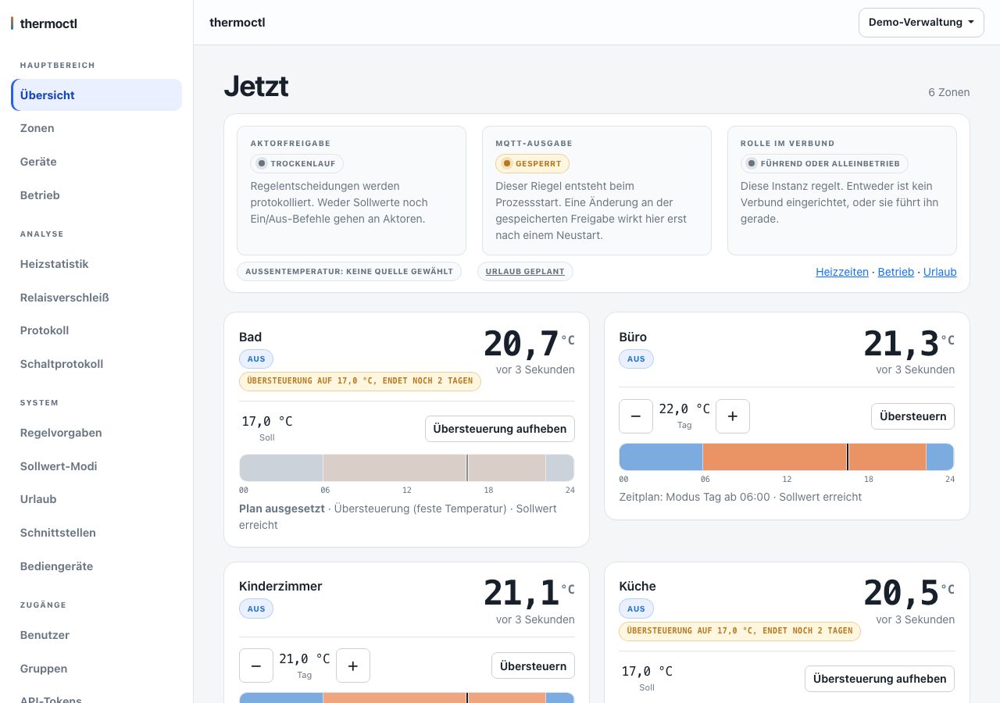
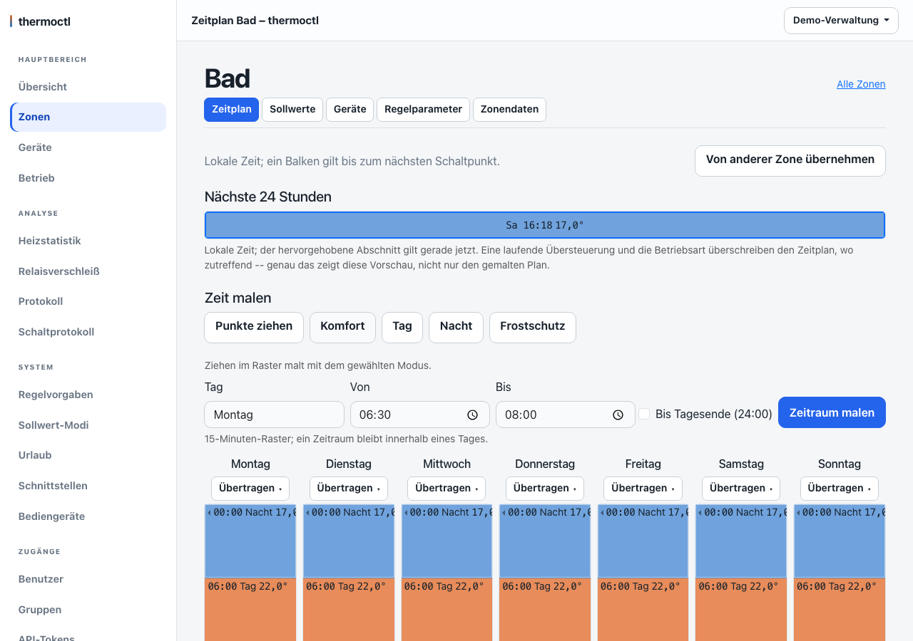
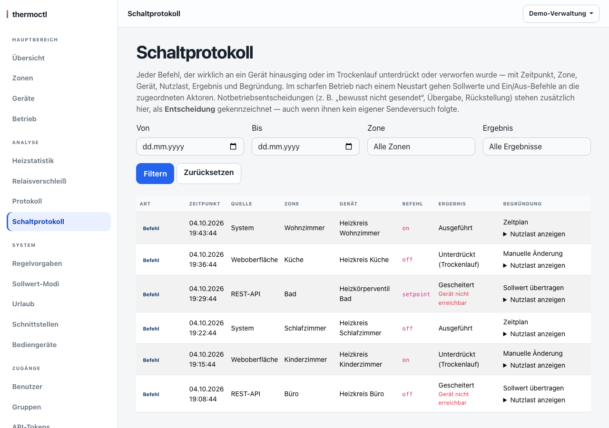
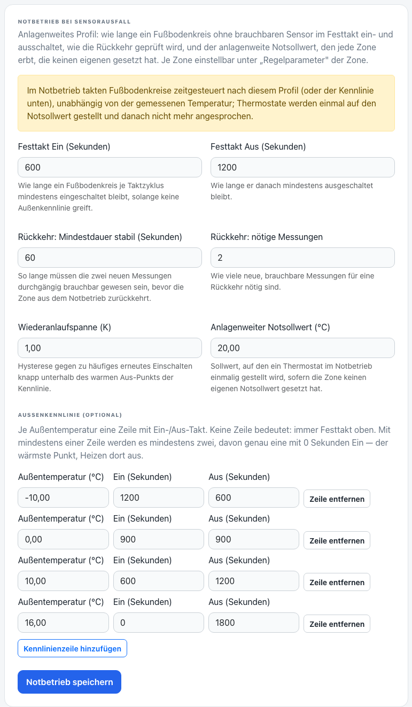
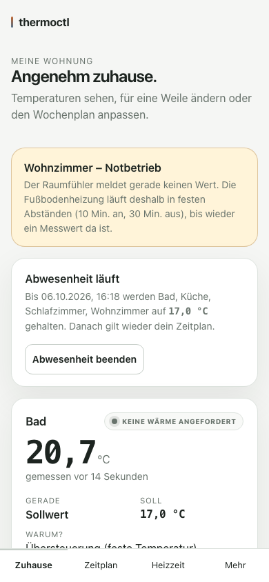
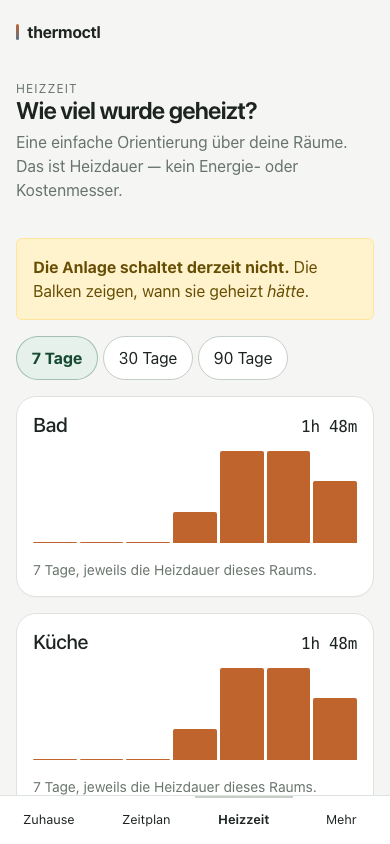
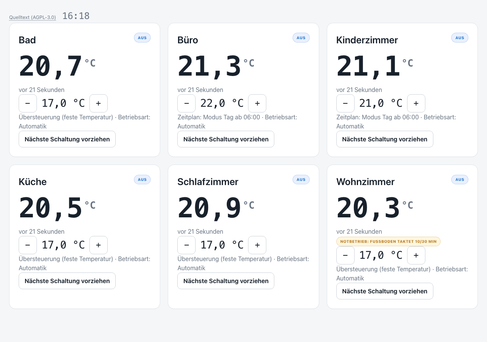

Heizungssteuerung zum Selbsthosten
Räume regeln nach Sensorwert und Zeitplan.
thermoctl ist eine eigenständige, selbst gehostete Heizungssteuerung. Konfiguriert wird im Browser; zusätzlich gibt es eine REST-Schnittstelle und einen MCP-Server. Home Assistant lässt sich per MQTT anbinden, ist aber keine Voraussetzung.
- Open Source, AGPL-3.0
- Docker oder Home-Assistant-Add-on
- SQLite oder MariaDB


Funktionen
Was thermoctl kann
Die Liste folgt der Dokumentation im Repository. Hinter jedem Fachbegriff steht eine Erklärung im Glossar.
-
Zeitpläne und Sollwert-Modi
Wochenpläne bestehen aus echten Schaltpunkten je Zone. Komfort, Tag, Nacht und Frostschutz sind vorgegeben; eigene Modi lassen sich anlegen.
Mehr: Zeitplan, Sollwert-Modus
-
Regelung mit Hysterese
Entscheidungen mit Hysterese und Mindestschaltdauer. Je Zone gibt es optional eine PI-Regelung, ausdrücklich als Beta und aus als Vorgabe.
Mehr: Hysterese, PI-Regelung (Beta)
-
Urlaub und Abwesenheit
Die Verwaltung setzt einen anlagenweiten Urlaub. Bewohner setzen für ihre eigenen Räume eine Abwesenheit bis zu einem Rückkehrdatum.
Mehr: Urlaub, Abwesenheit
-
Sonnenabsenkung
Optional: eine Absenkung des Sollwerts, wenn die Sonnenprognose sie erlaubt. Beginn, Änderung und Ende stehen im Schaltprotokoll.
Mehr: Sonnenabsenkung
-
Notbetrieb bei Sensorausfall
Fällt der Messwert einer Zone aus, kann ein Notbetrieb übernehmen, etwa mit Ersatzquelle, festem Takt oder Notsollwert. Er ist ab Werk eingeschaltet und je Zone einstellbar.
Mehr: Notbetrieb, Ersatzquelle
-
Schaltprotokoll und Regelentscheidungen
Für jede Zone wird festgehalten, was geschaltet würde und warum. Das Schaltprotokoll zeigt Befehle mit Ergebnis und Begründung.
Mehr: Schaltprotokoll, Regelentscheidung
-
Temperaturverlauf je Zone
Im Reiter Zonendaten zeigt ein Diagramm für 24 Stunden, 3 oder 7 Tage Ist-Temperatur, Zeitplan-Soll, wirksamen Soll, die Sonnenabsenkung als Band und die Heizanforderung, auch als Vollbild. Es zeichnet nur, was protokollierte Zeilen belegen; Lücken und unbekannte Zeiträume bleiben sichtbar.
-
Statistik und Meldungen
Heizzeit und Relaisverschleiß je Gerät und Tag. Störungen wie ein ausgefallener Sensor lassen sich einzeln per Webhook melden.
Mehr: Heizzeit, Relaisverschleiß, Meldungen
-
Zwei Oberflächen
Die Anlagensicht für Verwaltung und Technik: Zonen, Geräte, Betrieb, Protokolle, Rechte. Die Wohnungssicht für Bewohner: nur die eigenen Räume, mit Temperatur, Wochenplan und Heizzeit.
-
Kiosk für Wandtablets
Ein großformatiges Dashboard ohne Anmeldung, geöffnet über ein eigenes Token, das sich jederzeit widerrufen lässt.
Mehr: Kiosk
-
Anmeldung, Rechte und Passkeys
Authentifizierung ist verpflichtend. Benutzer, Gruppen und Rechte je Raum; Passkeys als Anmeldung ohne Passwort; API-Tokens mit begrenzten Rechten.
Mehr: Gruppen und Rechte, Passkey, API-Token
-
REST-API und MCP-Server
Dieselben Funktionen wie in der Weboberfläche lassen sich über eine REST-Schnittstelle und einen MCP-Server ansprechen.
Mehr: REST-Schnittstelle, MCP-Server
-
Home Assistant, MQTT und Zigbee2MQTT
Sensoren werden über Zigbee2MQTT eingelesen. Die Anbindung an Home Assistant per MQTT-Discovery ist optional und keine Voraussetzung.
Mehr: Home Assistant, Zigbee2MQTT und Brücke, MQTT
Einblicke
So sieht es aus
Alle Bilder entstehen aus erfundenen Demodaten, nicht aus einer echten Anlage. Ein Klick öffnet das Bild in voller Größe.












Installation
Zwei Wege
thermoctl läuft als eigener Docker-Container oder als Home-Assistant-Add-on. Voraussetzung ist bei Docker eine SQLite- oder MariaDB-Datenbank; SQLite braucht keinen eigenen Dienst.
Docker mit Compose
Das fertige Abbild ghcr.io/magicalwig34653/thermoctl gibt es für
linux/amd64 und linux/arm64.
- Quelltext holen und das Beispiel kopieren:
git clone https://github.com/MagicalWig34653/thermoctl.git cd thermoctl cp docker/compose.beispiel.yml compose.yml cp .env.example .env - In
.envmindestensTHERMOCTL_DATABASE_URLsetzen, etwasqlite:////data/thermoctl.db, undTHERMOCTL_SECRET_KEYmit einem zufälligen Schlüssel von mindestens 32 Zeichen:python3 -c "import secrets; print(secrets.token_urlsafe(48))" - Starten und das Log ansehen:
docker compose up -d docker compose logs thermoctl - Im Log steht beim ersten Start ein einmalig verwendbares Einrichtungs-Token.
Damit wird die Einrichtung unter
/setupabgeschlossen. Das Token ist wie ein Passwort zu behandeln.
Die Beispieldatei bindet den Port nur an die Loopback-Adresse
(127.0.0.1:8000). Alle Werte stehen in der .env, nie im
Quelltext; Zugangsdaten gehören nicht ins Repository.
Home-Assistant-Add-on
Das Add-on liegt in einem eigenen Repository und zeigt auf eine feste Version des Abbilds.
- In Home Assistant: Einstellungen, Add-ons, Add-on-Store.
- Über das Menü oben rechts Repositories öffnen und diese Adresse hinzufügen:
https://github.com/MagicalWig34653/thermoctl-addon - thermoctl installieren, konfigurieren und starten. Die Einbindung läuft über Ingress.
Wer bisher mit docker compose betreibt, findet den
Umstiegsweg in der
Anleitung zum Selbst-Hosten.
Danach: den Schattenbetrieb in Gang setzen, später scharf schalten. Alles Weitere steht in der Dokumentation.
Gut zu wissen
- Der Trockenlauf ist die Vorgabe: Die Regelung entscheidet und protokolliert, ohne Befehle an Geräte zu senden. Erst nach ausdrücklichem Scharfschalten und einem Neustart wird wirklich gesendet.
- thermoctl macht keine Zusagen über Heizverhalten, Komfort oder Verbrauch. Auch die PI-Regelung verspricht keinen Verbrauchsvorteil.
- Die Software steuert eine echte Heizung. Wer sie einsetzt, prüft ihre Entscheidungen zuerst im Trockenlauf; die Lizenz schließt jede Gewährleistung aus.
- Der Zugriff verlangt immer eine Anmeldung. Wer die Oberfläche über das Netz erreichbar macht, stellt einen Reverse-Proxy mit TLS davor und aktiviert THERMOCTL_SECURE_COOKIES.